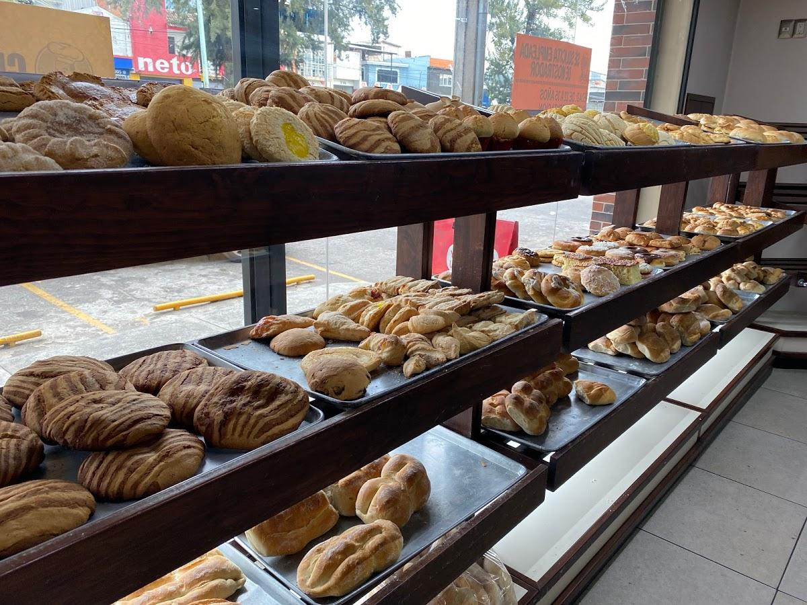

Ubicanos en la calle Villamar esquina con Quirio S/N Col. Las Haciendas 1
Contamos con una gran variedad de pan, como pan blanco, pan dulce, pan de muerto, entre otros.
También te ofrecemos leche, chocolate, café, azucar, canela, té´s de gran variedad.
